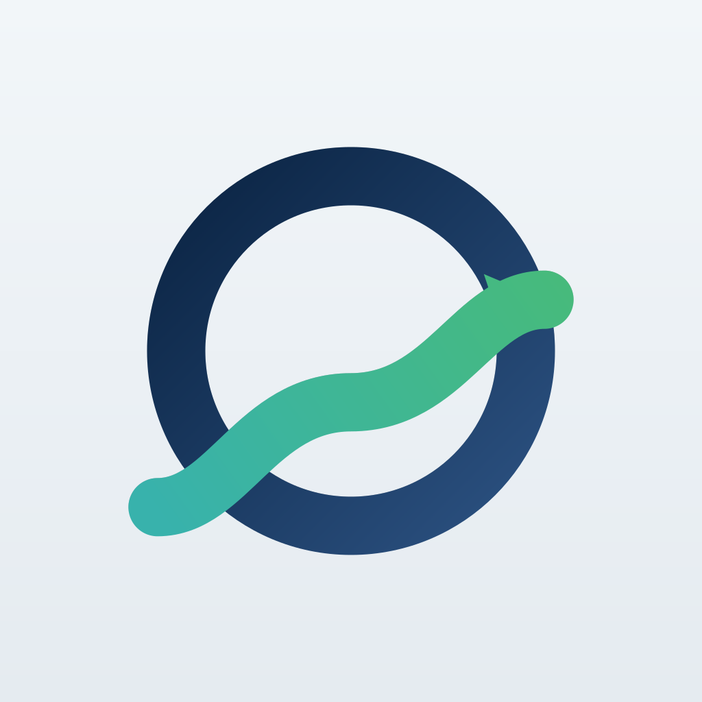
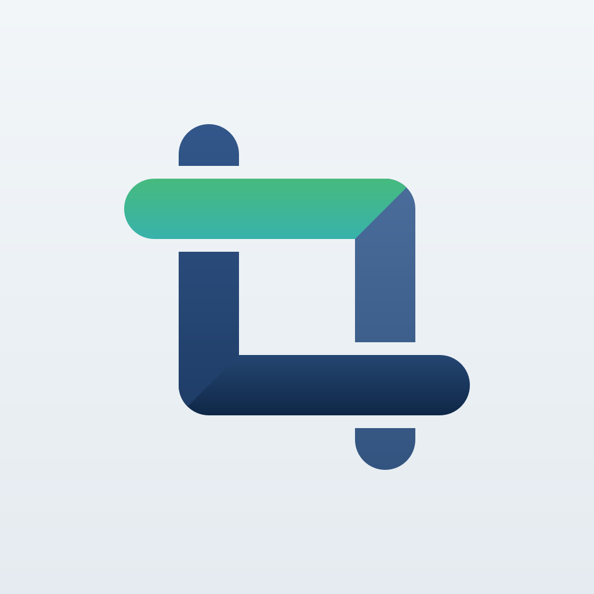

Apps
一个人做的几款 App，都在你的设备上运行——没有服务器，没有账号，没有广告，没有追踪。
每款各有自己的支持页、服务条款与隐私政策。
A few apps made by one person, all of them running on your own device — no servers, no accounts, no ads, no tracking.
Each has its own support page, terms, and privacy policy.
Cairn 司候
倒数与纪念日。在等的日子还剩多少，走过的日子已经多久。iPhone · iPad · Mac · Apple Watch。
Countdowns and anniversaries — how long until, and how long since. iPhone · iPad · Mac · Apple Watch.
主页Home · 支持Support · 服务条款Terms · 隐私政策Privacy

Keel 司元复式记账。每一笔都借贷平衡，资产负债表、利润表、现金流量表三张表实时可查。
Double-entry bookkeeping — every entry balances, and all three financial statements stay current.
主页Home · 支持Support · 服务条款Terms · 隐私政策Privacy

Rayloom 织光Mac 上的照片与视频工作台。RAW 直接看、四层调色不碰原片，一组素材合成星空堆栈、延时视频与景深合成。
A photo and video workbench for Mac — view RAW, edit without touching originals, and combine frames into star stacks, time-lapses, and focus stacks.
联系
Contact
gwongsam@gmail.com
中文或英文都可以，一般 2 个工作日内回复。
English or Chinese, usually answered within 2 business days.